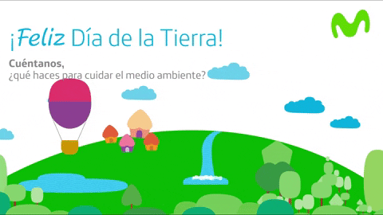
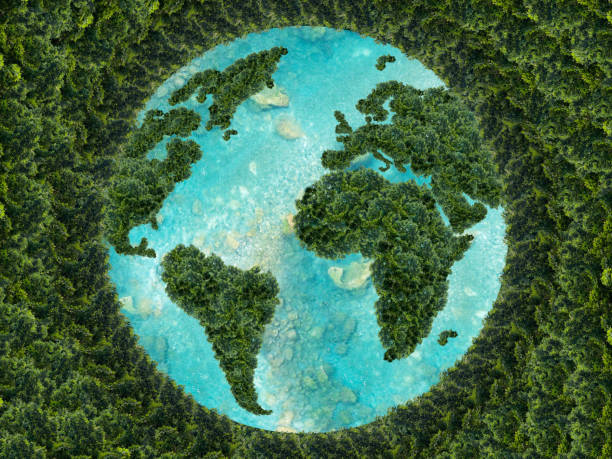

|  | |||||
| Energías Renovables | Reciclaje | Conservación de la Biodiversidad | Reducir la Contaminación | ||
|---|---|---|---|---|---|
| Las energías renovables, como la solar y la eólica, son fuentes de energía limpias y sostenibles que ayudan a reducir las emisiones de gases de efecto invernadero y combatir el cambio climático. | El reciclaje es fundamental para reducir la cantidad de desechos que van a parar a los vertederos y para conservar los recursos naturales. Separar los materiales reciclables y reutilizarlos contribuye a proteger el medio ambiente. | La conservación de la biodiversidad implica proteger los ecosistemas naturales y las especies en peligro de extinción. Preservar la diversidad biológica es esencial para mantener el equilibrio de los ecosistemas y asegurar la sostenibilidad a largo plazo. | Reducir la contaminación del aire, el agua y el suelo es crucial para proteger la salud humana y el medio ambiente. Medidas como la reducción de emisiones industriales, el control de la calidad del aire y la gestión adecuada de los desechos son fundamentales para lograr un entorno más limpio y saludable. | ||
|  | |||||
| TEXTO | |||||
| Como parte del curso Taller de animación 3D, dictado por los docentes Susana del Río y Rudy Ascue, los alumnos de la Facultad de Ciencias y Artes de la Comunicación elaboraron animaciones de corte ambiental. A través de cada una de las historias, se busca concientizar a la comunidad PUCP sobre la acción humana y sus impactos en la conservación del planeta.
Phil, el cactus: A través de un comercial, se busca concientizar al público sobre el cambio que el planeta ha experimentado con respecto a la desaparición de las áreas verdes. A partir de esto, el comercial publicita la compra de un cactus presentando sus beneficios para la vida humana. Puedes verlo haciendo click aquí. El cactario del amor: Retrata la historia de amor imposible entre un globo y cactus, pero que en realidad muestra los efectos del consumo de plástico y como este termina afectado a la naturaleza. Puedes verlo haciendo click aquí. Pacífico: Retrata la realidad de las playas contaminadas por el consumo de plástico y cómo esto afecta el ecosistema marino porque su degradación tarda miles de años. Puedes verlo haciendo click aquí. El gris no quita lo verde: Retrata los principales problemas de las ciudades en cuanto a contaminación: basura en las calles, incremento de autos y construcciones. A través de esta animación, se busca reflexionar sobre el impacto de la acción humana en la desaparición de los espacios verdes. Puedes verlo haciendo click aquí. Susana del Río, docente del curso Taller de animación 3D señala que es importante que el tema medio ambiental esté inmerso en los diversos cursos de la Universidad, porque vivimos en una época en la que el clima se encuentran tan variado por el cambio climático, o en la que los automóviles siguen significando un problema latente de contaminación para la ciudad. “Elegimos nuestro tema porque consideramos que tanto la flora y la fauna son importantes en todos los lugares del mundo, sobre todo en aquellos que se caracterizan por el crecimiento de las construcciones o por la alta contaminación de autos. A partir de ello, quisimos concientizar a la comunidad PUCP sobre cómo estamos desplazando a los seres que aportan vida al planeta, como las plantas y animales ”, subraya Andrea Pineda, egresada de la Facultad de Ciencias y Artes de la Comunicación. Mientras que, para Ana Paula López, alumna de la Facultad de Ciencias y Artes de la Comunicación tocar el tema ambiental fue satisfactorio porque se pudo contribuir a la labor que se realiza en el campus, difundiendo un mensaje que apoye la conservación de la naturaleza entre toda la comunidad PUCP. ¡Si tú cambias, el clima también! |
Descargar AQUI | ||||